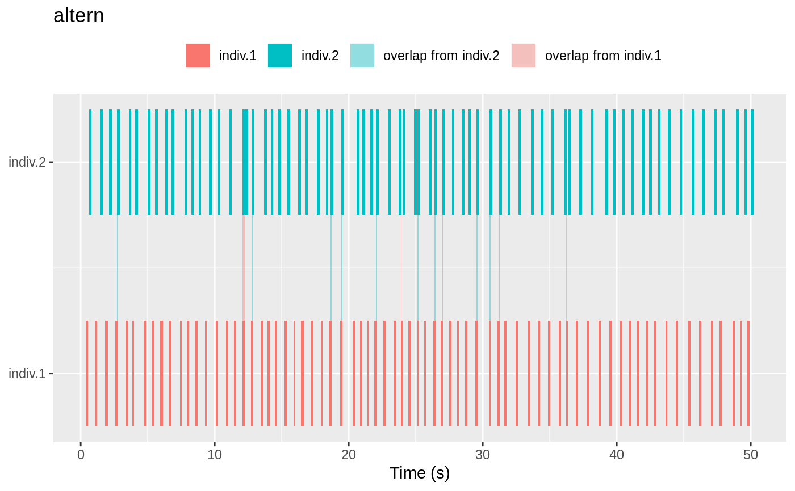
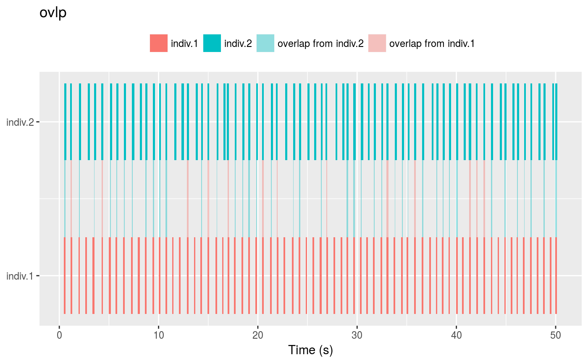
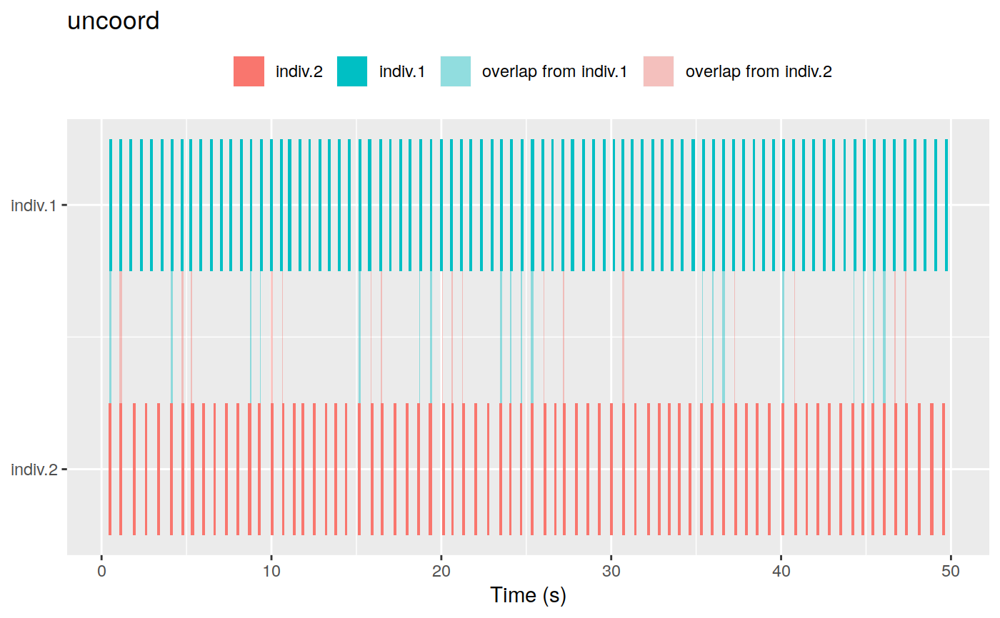

coor.graph creates graphs of coordinated singing and highlights the signals that overlap
in time. The signals are represented by polygons of different colors.
coor.graph(X, only.coor = FALSE, ovlp = TRUE, xl = 1, res= 80, it = "jpeg", img = TRUE, tlim = NULL, pb = TRUE)
| X | Data frame containing columns for singing event (sing.event), individual (indiv), and start and end time of signal (start and end). |
|---|---|
| only.coor | Logical. If |
| ovlp | Logical. If |
| xl | Numeric vector of length 1, a constant by which to scale spectrogram width. Default is 1. |
| res | Numeric argument of length 1. Controls image resolution. Default is 80. |
| it | A character vector of length 1 giving the image type to be used. Currently only "tiff" and "jpeg" are admitted. Default is "jpeg". |
| img | Logical argument. If |
| tlim | Numeric vector of length 2 indicating the start and end time of the coordinated singing events to be displayed in the graphs. |
| pb | Logical argument to control progress bar and messages. Default is
|
The function returns a list of graphs, one for each singing event in the input data frame. The graphs can be plotted by simply calling the list. If 'img' is TRUE then the graphs are also saved in the working
directory as files.
This function provides visualization for coordination of acoustic signals. Signals are shown as polygon across a time axis. It also shows which signals overlap, the amount of overlap, and highlights the individual responsible for the overlap using a color code. The width of the polygons depicting the time of overlap.
{ # First set temporary folder # setwd(tempdir()) # load simulate singing events (see data documentation) data(sim.coor.sing) # make coor.graphs in tiff format coor.graph(X = sim.coor.sing, ovlp = TRUE, only.coor = FALSE, xl =2, res =80, it = "tiff", img = TRUE) #' # make coor.graphs in graphic device format cgs <- coor.graph(X = sim.coor.sing, ovlp = TRUE, only.coor = FALSE, img = FALSE) cgs }#> | | 0 % ~calculating#> |+++++++++++++++++ | 33% ~01s#> |++++++++++++++++++++++++++++++++++ | 67% ~01s#> |++++++++++++++++++++++++++++++++++++++++++++++++++| 100% elapsed = 02s #> | | 0 % ~calculating |+++++++++++++++++ | 33% ~00s |++++++++++++++++++++++++++++++++++ | 67% ~00s |++++++++++++++++++++++++++++++++++++++++++++++++++| 100% elapsed = 00s#> [[1]]#> #> [[2]]#> #> [[3]]#>